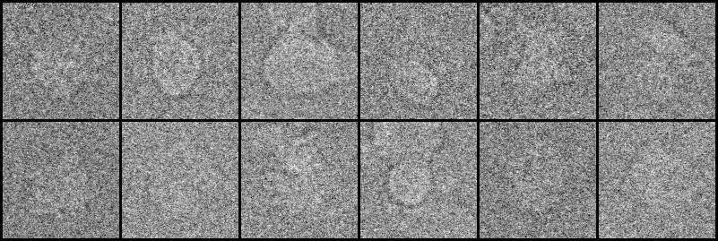
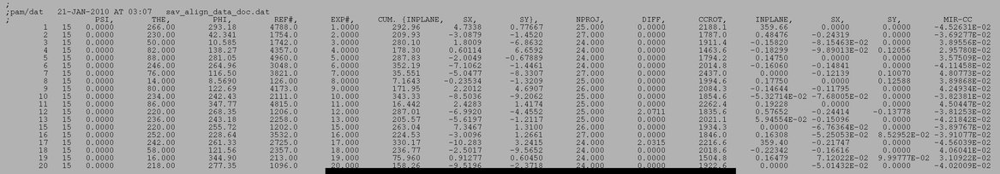
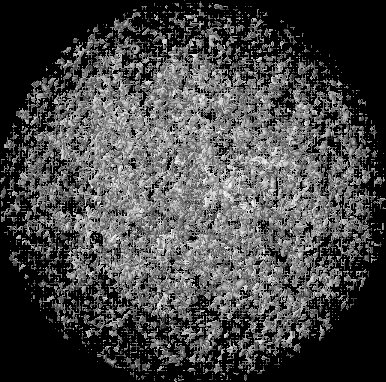

| .OPERATION: | RB 3F | ; Reconstruct volume |
| .TEMPLATE FOR IMAGE FILES: | sav_data | ; Unaligned projections (input) |
| .FILE NUMBERS OR SELECTION DOC. FILE: | 1-12 | ; List of projections (input) |
| .ANGLES DOC FILE: | sav_align_data_doc | ; Projection angles doc file (input) |
| .SYMMETRIES DOC FILE: | * | ; No symmetries |
| .RECONSTRUCTED VOLUME: | rb3f | ; Reconstructed volume (output) |
| .TRANSFORMED OUTPUT IMAGES TEMPLATE: | * | ; No rotated image files (output) |
| INPUT IMAGE MONTAGE |
|---|
|  |
| sav_data_1_12_mn |
| ANGLES DOC FILE |
|---|
|  |
| sav_align_data_doc |
| OUTPUT VOLUME (Surface view) |
|---|
|  |
| rb3f |